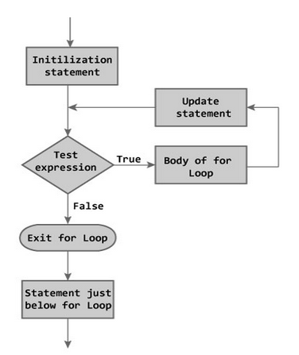

For loop
Sometimes, we need to repeat a block of code a certain number of times. Java provides the for-loop that is very convenient for this purpose. This loop is often used to iterate over a range of values or an array. If the number of iteration or the range borders are known, it is recommended to use the for-loop. If they are unknown the while-loop may be a preferable solution.
The base for-loop syntax
This loop has the following base syntax:
for (initialization; condition; increment/decrement) {
// do something
}
 The explanations: * the initialization statement is executed once when the loop begins, usually, here loop variables are initialized; * the condition determines the need for the next iteration; if it's false, the loop terminates; * the increment/decrement expression is invoked after each iteration of the loop; usually, here loop variables are changed. Inside the loop's body, the program can perform any correct java statements. It can even contain other loops. The order of execution for any for-loop is always the same: the initialization statement; 1. if the condition is false then terminate; 2. the body 3. the increment/decrement 4. go to the stage 2 (condition).
Examples
Example 1. Loop for printing integer numbers from 0 to 9 in the same line.
int n = 9;
for (int i = 0; i <= n; i++) {
System.out.print(i + " ");
}
The code outputs:
0 1 2 3 4 5 6 7 8 9
The variable declared in the initialization expression is visible only inside the loop including the condition, the body and the increment/decrement expression. The integer loop's variables is often called i, j, k or index.
Example 2. Sum of integer numbers from 1 to 10 (inclusive) using the for-loop.
int startIncl = 1, endExcl = 11;
int sum = 0;
for (int i = startIncl; i < endExcl; i++) {
sum += i;
}
System.out.println("Sum = " + sum); // it prints "55"
Example 3. Sum of integers from 1 to maximum (inclusive) using the for-loop.
Scanner in = new Scanner(System.in);
int max = in.nextInt();
int sum = 0;
for (int i= 0; i<max;i++){
sum += i;
}
System.out.println("Sum = " + sum);
Note
Sometimes it's needed to declare a variable outside the loop. it's possible as well.
int i;
for (i = 10; i > 0; i--) {
System.out.print(i + " ");
}
Infinite for-loop
The initialization statement, the condition, and the increment/decrement expression are optional, the for loop may not have one or all of them. Moreover, it's possible to write an infinite loop:
for (;;) {
// do something
}
Nested loops
It's possible to nest one for-loop into another for-loop.
For instance, the following code prints the multiplication table of numbers from 1 to 9 (inclusive).
for (int i = 1; i < 10; i++) {
for (int j = 1; j < 10; j++) {
System.out.print(i * j + "\t");
}
System.out.println();
}
It outputs:
1 2 3 4 5 6 7 8 9
2 4 6 8 10 12 14 16 18
3 6 9 12 15 18 21 24 27
4 8 12 16 20 24 28 32 36
5 10 15 20 25 30 35 40 45
6 12 18 24 30 36 42 48 54
7 14 21 28 35 42 49 56 63
8 16 24 32 40 48 56 64 72
9 18 27 36 45 54 63 72 81